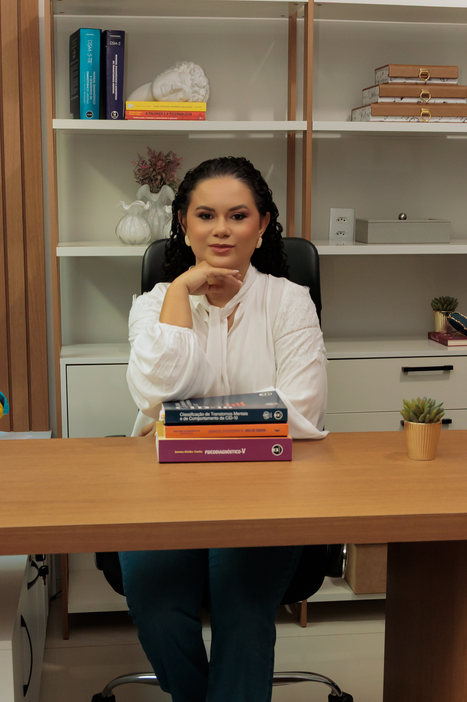
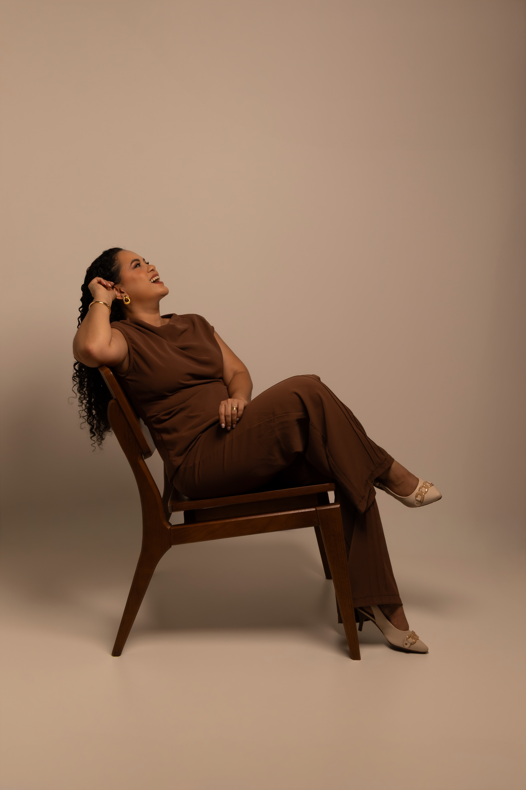

2020
Formação em Psicologia
Me formei em Psicologia em 2020, iniciando minha trajetória na área clínica.

A terapia pode ser um momento de pausa, de cuidado e de escuta. Um espaço para falar sobre o que você está vivendo, organizar os pensamentos e compreender melhor aquilo que sente.
No atendimento on-line, você pode estar no conforto da sua casa ou em outro lugar onde se sinta bem para conversar. Sem precisar sair, sem pressa e respeitando o seu próprio tempo.
Quero que você se sinta à vontade para falar, ser ouvido(a) e construir esse processo com tranquilidade. Estou aqui para caminhar com você.
Ajuda você a encontrar caminhos diante das incertezas da vida.
Recebe você com escuta empática, sem julgamentos.
Um espaço seguro onde a sua voz é prioridade.
Estimula o autoconhecimento e novas perspectivas.
Cada história é única e merece respeito integral.
Caminha junto com você em direção ao bem-estar.
Apaixonada em transformar vidas com psicologia,
promovendo saúde mental e bem-estar.
˗ˏˋ 𝚿 ˎˊ˗

Me formei em Psicologia em 2020, iniciando minha trajetória na área clínica.
Atualmente curso pós-graduação em Neuropsicologia, buscando ampliar continuamente meus conhecimentos.
Atuo como psicóloga clínica na clínica particular e na saúde pública de Ivinhema-MS.
Também faço parte do projeto RUAH-Pro Vida, levando minha atuação para além do consultório.
Sou apaixonada por ouvir histórias e acompanhar processos de transformação. Fora do consultório, gosto de ler, ouvir música, assistir filmes e conhecer novos lugares. Acredito que cada experiência amplia nosso olhar sobre as pessoas e fortalece a empatia que levo para cada atendimento.
"Conheça todas as teorias, domine todas as técnicas, mas ao tocar uma alma humana, seja apenas outra alma humana."— Carl Jung